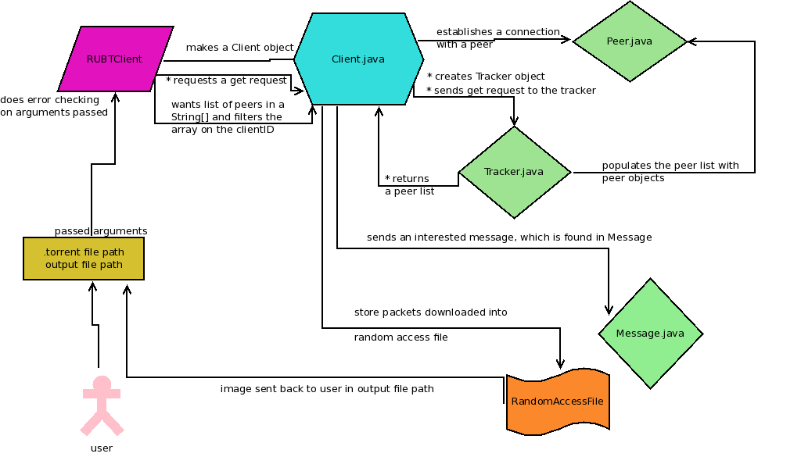

- Anthony Wong
- Paul Tai
- Alexandra Zhang
THE WRITE UP
How the program works
- All of the essential code is in Client.java and is called by RUBTClient.java.

Description of classes
RUBTClient.java
- Takes in a file path for the .torrent file and another file path for the desired output file.
- Exiting gracefully is handled by detecting a kill signal using
Runtime.getRuntime().
- It prints out a message if someone kills the program (and if the program dies by itself).
- If the kill signal is not reached, the program continues to execute in the
while(true) normally:
- It reads in the file path and output path inputted and makes a new Client object.
- The client makes an HTTPGet request.
- A peer list is printed out and stored into a
String[].
- Said peer list is sent through a for loop to retrieve each peer prefixed with "RUBT11".
- The client then connects using the peer retrieved from the for loop.
- tl;dr: calls functions to run the client.
Client.java
- The bittorrent client class that does a hodgepodge of different ... things that really should be done by the other classes (objects) we have.
- Handles the get request, getting the peer list, connecting to a specific peer, setting the client ID, sending "interested" messages, downloading the packets, shaking hands, getting bitfields, encoding a URL (with the hash), creating the output file, and checks the data received by each piece.
Member variables (for reference)
private static String clientIDprivate static final char[] HEXCHARS: straightup all the hexchars into a char array...........private Tracker tracker: tracker to connect to the peers.private TorrentInfo torrentInfo: torrent info for the .torrent file (filePath).private URL url: torrent URL.private HashMap<String, Peer> peerListprivate String filePath: the .torrent filepath.private String saveName: the output filepath.private RandomAccessFile dataFile: file that we're outputing everything to (should have image).private final int MAXIMUMLIMT: maximum size of a single requestprivate boolean[] blocks: the bitfield (which blocks are retrieved and which are not)private int numBlocks: the number of blocks retrieved.private double numPackets: the number of packets retrieved.private DataOutputStream request: requests made to the peer you're connecting to.private DataInputStream response: responses received from the peer you're connecting to.private static final char[] intArray: straightup all the digits into a char array..............
Message.java
- An object for every message you send to the peer.
- Stores all of the different kinds of messages you could send in byte arrays.
- Includes functions to send specific messages (piece, request, have).
Packet.java
- Files contain pieces and pieces contain packets which include parts that can have a size of only 16384.
- We don't have a pieces class.
- Therefore, these are the objects that store "pieces" of the file downloaded one packet at a time.
Member variables
private int blockNumprivate int packetNumprivate byte[] data
Peer.java
- In preparation for the future, when there will be way more peers.
- For now, it holds values for whether or not it's choked, interested, and its usual IP/ID/Port values.
Member variables
private String peerIDprivate String peerIPprivate int peerPortprivate boolean isChokeprivate boolean isInterested
Tracker.java
- Connects peers to other peers.
- Used to get a list of peers and opens connections to them. It also captures the peers' response.
Member variables
private URL urlpublic final static ByteBuffer PEERSpublic final static ByteBuffer IPpublic final static ByteBuffer PEERIDpublic final static ByteBuffer PORT
Opinions & feedback
- Should've planned better. Used more of the classes we made for actual stuff.
- There were things not listed on the assignment specs were actual requirements.
- Hardest part: version control...... (only for Anthony)
- Should have actually split up the work.